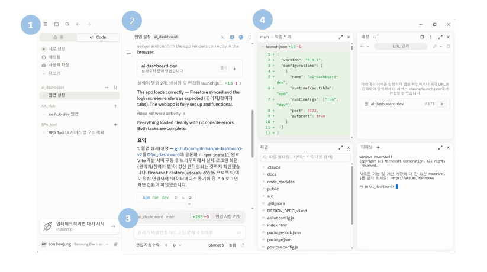

AX 실무 교육 시리즈
Claude Code 데스크톱 앱으로 시작하는 AI 작업 자동화
Code 탭 · 프로젝트 · 검토 · Git · 자동화 · CLI 입문
비개발자 초보자용
설명 + 실습
code.claude.com/docs/en/desktop
Code 탭 · 프로젝트 · 검토 · Git · 자동화 · CLI 입문
Chat · Cowork · Code의 차이점 파악
데스크톱 앱 설치와 첫 세션 생성
메뉴 구성과 8개 작업 패널 활용
좋은 요청, 단계별 계획과 권한 모드
Diff 코드 검토, Git 커밋 및 PR 생성
Routines 자동화와 CLI vs Desktop 비교
질문에 답하고 문장을 만듭니다. 로컬 프로젝트 파일을 직접 바꾸는 작업은 기본 목적이 아닙니다.
선택한 폴더를 읽고 → 계획하고 → 파일을 수정하고 → 명령과 테스트로 검증합니다.
Claude Desktop 앱은 상단에 Chat · Cowork · Code 세 탭이 있습니다.
질문 · 글쓰기 · 분석
일반 대화 중심 (claude.ai와 유사)
파일 접근 없음
샌드박스 VM에서 동작하는 자율 백그라운드 에이전트
장시간 · 다단계 업무 독립 처리
로컬 파일 직접 접근
변경을 실시간으로 검토 · 승인
본 강의의 중심 다룸
Pro · Max · Team · Enterprise 중 Claude Code 포함 유료 플랜
macOS · Windows · Linux(beta)용 최신 Claude Desktop
Windows는 Git for Windows 설치 후 앱 재시작
claude.com/download에서 운영체제 선택
다운로드 파일 실행 후 앱 열기
Anthropic 계정으로 로그인
화면 상단 Code 탭 선택
Local · Cloud · SSH · WSL
Claude가 읽고 바꿀 프로젝트
작업 난이도에 맞는 모델 선택
Manual · Plan · Accept edits · Auto
내 컴퓨터 파일/도구 사용. 초보자 실습 추천
앱을 닫아도 클라우드에서 계속 실행
원격 서버 · 개발 머신에 연결
Windows에서 Linux 환경 사용

전체 대화·프로젝트 현황을 보여주는 시작 화면으로 이동
코드 작업 모드로 전환. 파일 편집·실행·터미널 기능이 활성화됨
새 대화(작업 세션)를 생성
예약 실행하도록 설정한 작업 목록 확인
사용자 정의 설정 또는 커스텀 명령 관리
숨겨진 추가 메뉴 항목 펼치기
지시 사항 자연어 입력
수동 · 편집 자동 수락 · 자동 계획
파일 첨부 또는 음성 입력
복잡한 작업일수록 추론 수준 높게 설정
패널을 드래그해 재배치하고 가장자리로 드래그해 크기를 바꿀 수 있습니다.
명령 직접 실행
변경 전후 비교
앱 · 문서 미리보기
파일 열기 · 간단 편집
단축키: Cmd/Ctrl+Shift+B (Browser) · Ctrl+` (Terminal)
도구 호출 요약, 답변은 전체 표시 (일상 작업용)
파일 읽기와 중간 단계까지 상세 표시 (문제 디버깅용)
최종 답변과 변경만 표시 (병렬 세션 빠른 확인용)
사이드바에서 선택하거나 새로 생성
입력창에 자연어로 요청
중앙 패널에서 실행 로그 · 요약 확인
필요시 편집 자동수락 활성화
Diff 패널에서 코드 검토
Browser · Terminal로 검증
문제 없으면 Git에 변경 사항 최종 반영
무엇을 만들거나 고칠까요?
어떤 폴더 · 파일인가요?
형식 · 도구 · 보안 조건은?
어떻게 확인하면 끝인가요?
편집·명령 전에 승인하는 초보자 기본 모드
파일 편집은 자동 승인하고 다른 작업은 확인
읽기·탐색 후 계획만 우선 제안
안전 검사와 함께 편집·명령 자동 실행
승인 없이 실행하는 샌드박스·VM 전용 모드
파일 · 구조 파악
변경 범위 합의
편집 및 명령
Diff 및 댓글
테스트 · 미리보기
Git 저장소에는 세션마다 자동 격리된 Worktree가 만들어집니다 (별도 체크박스 없음)
변경 파일 확인, 커밋 전 Diff 검토
세션마다 격리된 작업 공간,
같은 저장소의 충돌 감소
서로 독립적인 작업만 동시에 수행
변경 요약과 테스트 결과 확인 후 PR 작성
CI 실패 출력을 읽고 자동 수정 시도
모든 검사 통과 시 squash merge
프로젝트 규칙 및 지시사항 저장
GitHub, Slack, Linear 연동
로컬 및 클라우드 예약 자동화 한 화면 관리
1. Connector
2. Bash 명령
3. Browser / Chrome
4. iOS 시뮬레이터
• 마지막 수단으로 화면 클릭/입력
• 기본 비활성화 상태
• 실제 데스크톱 권한 주의
설치 스크립트를 실행한 뒤 프로젝트 폴더의 터미널에서 시작합니다.
프로젝트 폴더에서 claude 실행
― 대화형 세선 시작
claude -c로 직전 대화 계속
claude -r 로 세션 목록에서 골라 재개
/desktop으로 CLI 세션을 앱에서 열기
• 시각적 검토와 병렬 작업에 강함
• Diff · File · Terminal · Browser 패널 지원
• Local · Cloud · SSH 환경을 여러 세션으로 관리
• 비동기 작업, PR 검토, 화면 미리보기에 적합
• 스크립트와 터미널 자동화에 강함
• 터미널에서 대화형으로 실행하고 도구·파일로 연결
• claude -p · pipe · JSON 출력으로 반복 작업 자동화
• 플래그로 모델 · 권한 · 도구 · 출력 형식을 정밀 제어
• CI/CD · 원격 서벗 · 셸 스크립트에 연결할 때 적합
Manual 모드로 시작하고, 승인 전에 항상 Diff를 확인하세요.